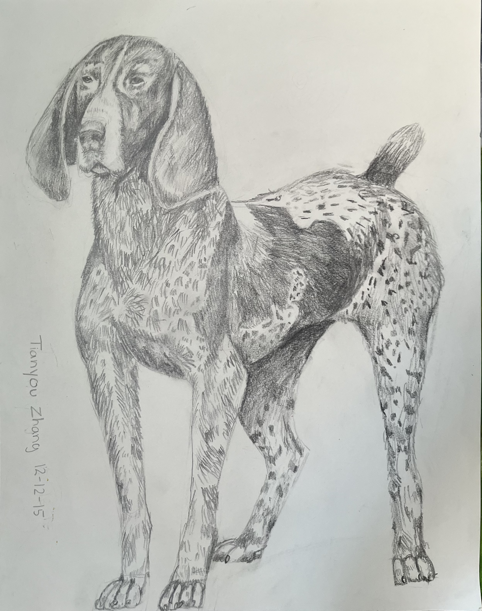
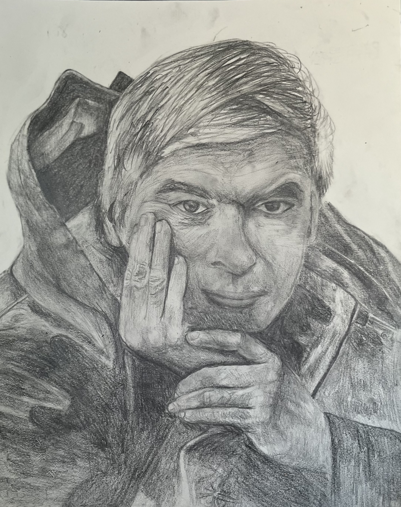

Tianyou's Art Portfolio
I have spent nearly a decade drawing and have used several different mediums such as pencil, water color, and oil painting.
The pictures are ordered chronologically from when I was 10 uptil now. I hope you enjoy the drawings.
Animal Sketches

Water Color
Humans

Still Life
Drawings based of of real life objects
Oil Painting
Paintings based of of real life objects or online pictures
School
School Art Class: We had to draw our backpack